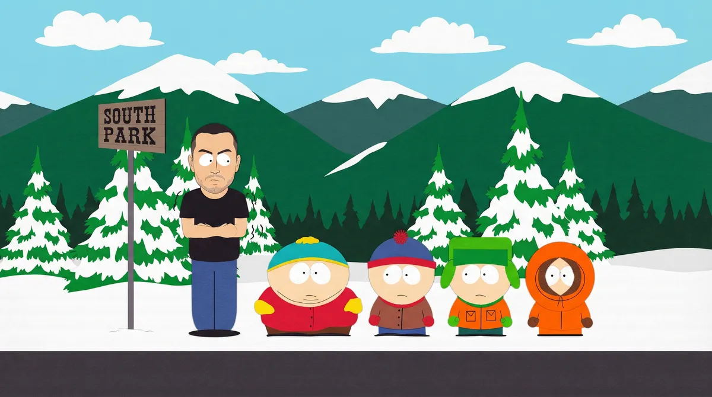
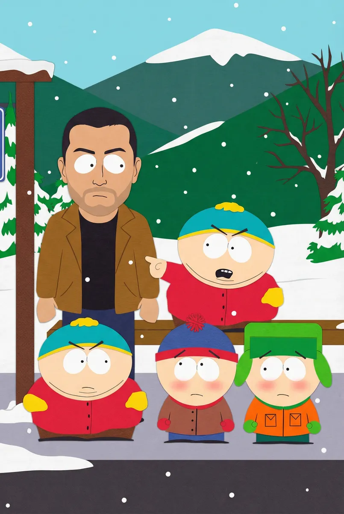
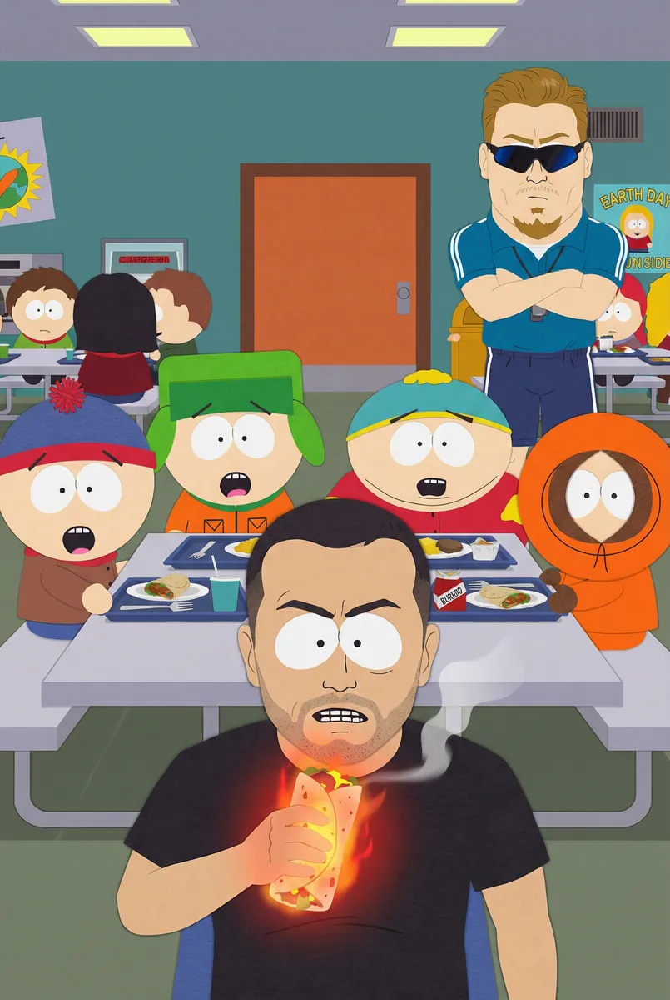
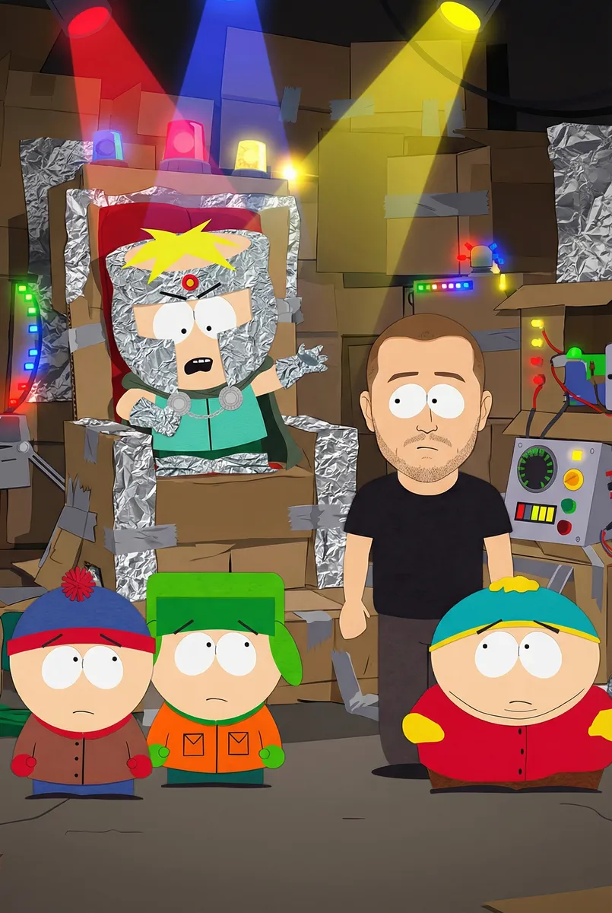
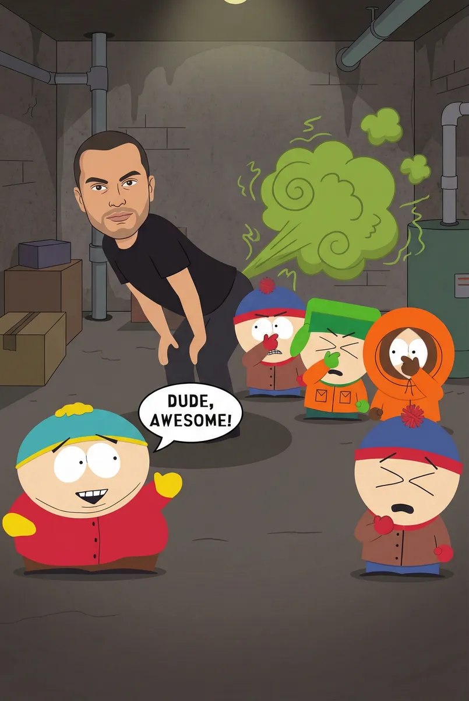
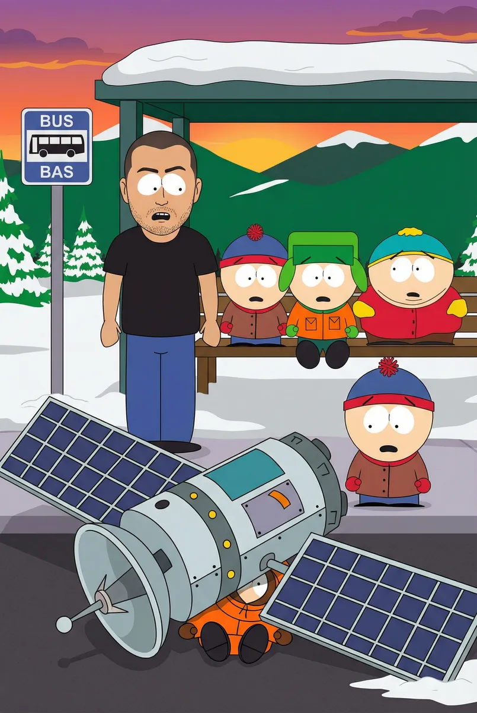

Ricardo em South Park: A Saga do Burrito de Ouro

Protagonizado por Ricardo
Capítulo 1
Ricardo acabara de se mudar para a pacata e disfuncional South Park. Enquanto esperava o ônibus na neve, Cartman o encarou de cima a baixo e gritou: 'Quem é esse novo babaca? Ele tem cara de quem gosta de salada!'. Kyle tentou intervir, mas Ricardo apenas sorriu, percebendo que sua vida agora seria um completo absurdo.
Prompt: South Park style animation, Ricardo standing at the snowy bus stop next to Cartman who is pointing and yelling, Stan and Kyle looking embarrassed, traditional 2D cutout art.

Capítulo 2
Na escola, o caos começou quando o Diretor PC acusou Ricardo de não ter um 'privilégio de novato' adequado. Para provar seu valor, Ricardo foi desafiado por Cartman a comer o 'Burrito de Ouro' na lanchonete, um lanche tão picante que diziam ser capaz de abrir portais dimensionais nos fundos das calças de qualquer um.
Prompt: South Park elementary cafeteria, Ricardo sitting at a table with a glowing spicy burrito, the four main kids watching in anticipation, PC Principal standing in the background, 2D animation style.

Capítulo 3
Após a primeira mordida, o mundo ao redor de Ricardo começou a derreter. Ele e os meninos foram transportados para o porão de Butters, que agora era o Professor Chaos. 'Com o poder desse burrito, eu dominarei o estoque de papel higiênico da cidade!', vilanizou Butters, enquanto usava sua clássica armadura de papel alumínio.
Prompt: Professor Chaos in his cardboard and foil lair, Ricardo and the boys looking confused, bright flashy colors in South Park art style, dramatic lighting.

Capítulo 4
Ricardo, sentindo os efeitos explosivos do burrito, percebeu que seu 'gás' era sua maior arma. Ele lançou um ataque sônico que derrubou os lacaios de hamster do Professor Chaos. Stan gritou: 'Cara, o Ricardo é o herói que essa cidade merece, mas definitivamente não é o que a gente precisa agora!'.
Prompt: Ricardo performing a comedic flatulence power move in a dark basement, green gas clouds in a cartoonish style, South Park characters reacting with disgust and awe.

Capítulo 5
Com o Professor Chaos derrotado, tudo voltou ao normal no ponto de ônibus. Cartman deu um tapinha nas costas de Ricardo: 'Você é menos pior do que o Kyle'. De repente, um satélite desgovernado caiu do céu e esmagou Kenny. 'Meu Deus, mataram o Kenny!', gritou Stan. 'Seus filhos da mãe!', completou Kyle, enquanto Ricardo apenas suspirava.
Prompt: The snowy bus stop at sunset, Ricardo and the boys standing together, a satellite has crushed Kenny leaving only his boots visible, South Park traditional animation style, final scene.
